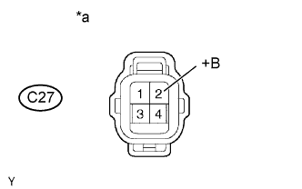

DTC P0037 Слабый ток в цепи управления подогревателем кислородного датчика (датчик 1 ряда 2) |
DTC P0038 Сильный ток в цепи управления подогревателем кислородного датчика (датчик 2 ряда 1) |
DTC P102D Характеристики цепи подогревателя датчика O2 (заедание во включенном положении датчика 2 ряда 1) |
| № DTC | Условие обнаружения DTC | Неисправный участок |
| P0037 | Ток подогревателя ниже заданного уровня, когда подогреватель работает (логика диагностирования за 1 поездку). |
|
| P0038 | Ток подогревателя выше заданного уровня, когда подогреватель работает (логика диагностирования за 1 поездку). |
|
| P102D | Ток подогревателя выше заданного уровня, когда подогреватель не работает (логика диагностирования за 1 поездку). | ECM |
| Информация на дисплее прибора | Описание |
| NORMAL |
|
| ABNORMAL |
|
| INCOMPLETE |
|
| UNKNOWN |
|
| 1.ПРОВЕРЬТЕ ПОДОГРЕВАЕМЫЙ КИСЛОРОДНЫЙ ДАТЧИК (СОПРОТИВЛЕНИЕ ПОДОГРЕВАТЕЛЯ) |
Проверьте подогреваемый кислородный датчик (Нажмите здесь).
|
| ||||
| OK | |
| 2.ПРОВЕРЬТЕ НАПРЯЖЕНИЕ НА КОНТАКТЕ (ПИТАНИЕ) |
|  |
Отсоедините разъем подогреваемого кислородного датчика.
Установите замок зажигания в положение ON (ВКЛ).
Измерьте напряжение в соответствии со значениями, приведенными в таблице.
| Контакты для подключения диагностического прибора | Положение выключателя | Заданные условия |
| C27-2 (+B) - масса | Зажигание включено | 11-14 В |
| *a | Вид спереди разъема со стороны жгута проводов: (к подогреваемому кислородному датчику) |
Подсоедините разъем подогреваемого кислородного датчика.
|
| ||||
| OK | |
| 3.ПРОВЕРЬТЕ ЖГУТ ПРОВОДОВ И РАЗЪЕМ (ПОДОГРЕВАЕМЫЙ КИСЛОРОДНЫЙ ДАТЧИК – ECM) |
Отсоедините разъем подогреваемого кислородного датчика.
Отсоедините разъем ЭБУ.
Измерьте сопротивление в соответствии со значениями, приведенными в таблице ниже.
| Подключение диагностического прибора | Условие | Заданные условия |
| C27-1 (HT1B) - C63-18 (HT1B) | Всегда | Менее 1 Ом |
| Подключение диагностического прибора | Условие | Заданные условия |
| C27-1 (HT1B) или C63-18 (HT1B) - масса | Всегда | 10 кОм или более |
Подсоедините разъем подогреваемого кислородного датчика.
Подсоедините разъем ECM.
|
| ||||
| OK | |
| 4.ПРОВЕРЬТЕ, ВОЗОБНОВЛЯЕТСЯ ЛИ ВЫВОД DTC (DTC P0037, P0038 ИЛИ P102D) |
Подсоедините портативный диагностический прибор к DLC3.
Установите замок зажигания в положение ON (ВКЛ).
Включите портативный диагностический прибор.
Удалите коды DTC (Нажмите здесь).
Запустите двигатель.
Дайте двигателю поработать на холостом ходу не менее 1 минуты.
Войдите в следующие меню: Powertrain / Engine and ECT / Trouble Codes.
Удалите коды DTC.
| Результат | Следующий шаг |
| DTC не выводится | А |
| DTC P0037, P0038 или P102D выводится | B |
|
| ||||
| А | ||
| ||
| 5.ПРОВЕРЬТЕ ЖГУТ ПРОВОДОВ И РАЗЪЕМ (ПОДОГРЕВАЕМЫЙ КИСЛОРОДНЫЙ ДАТЧИК - ИНТЕГРИРОВАННОЕ РЕЛЕ) |
Отсоедините разъем подогреваемого кислородного датчика.
Извлеките интегрированное реле (реле EFI) из блока реле моторного отсека.
Измерьте сопротивление в соответствии со значениями, приведенными в таблице ниже.
| Подключение диагностического прибора | Условие | Заданные условия |
| C27-2 (+B) - 1B-4 | Всегда | Менее 1 Ом |
| Подключение диагностического прибора | Условие | Заданные условия |
| C27-2 (+B) или 1B-4 - масса | Всегда | 10 кОм или более |
Подсоедините разъем подогреваемого кислородного датчика.
Установите интегрированное реле на место.
|
| ||||
| OK | ||
| ||